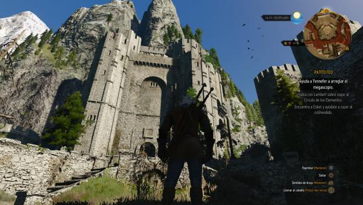
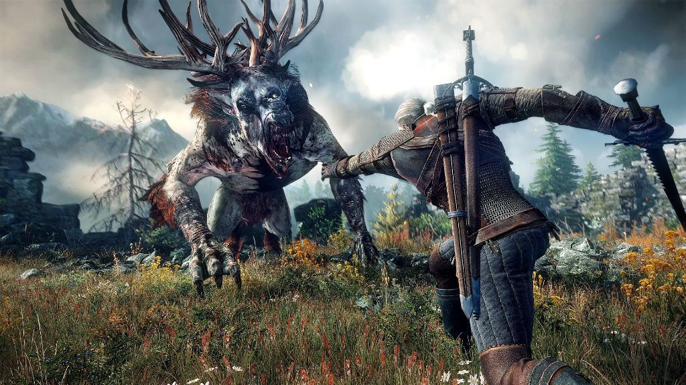
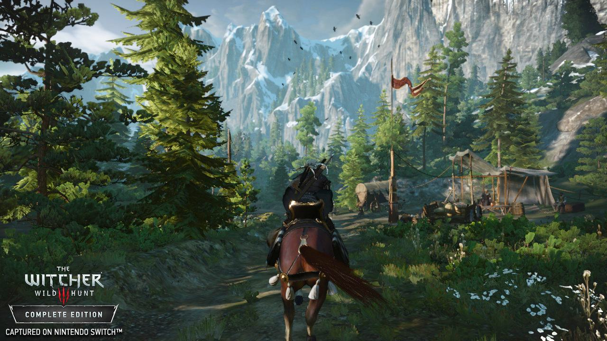
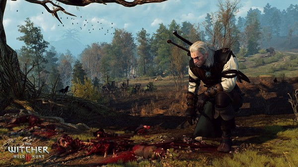

Game Zone
Welcome to Game Zone

THE WITCHER III:WILD HUNT
|  |  |
|  |  |
Todo viaje tiene que concluir. Hemos andado con Geralt la senda del brujo, conocido sus tribulaciones, compartido su bebida y conocido sus amores. Son muchos los que han descubierto una fantástica obra literaria gracias al videojuego, mientras que los que llegan de los libros han podido ser testigos del amor de CD Projekt por esta saga. Junto a él hemos visto el ascenso de un estudio polaco, desconocido para el mundo hasta la fecha, convertido ahora en todo un campeón para el usuario y en un grupo de referencia. Ha sido un viaje hermoso, pero toca cerrar una etapa.
La tercera y última entrega de la trilogía de Geralt de Rivia ha tenido, desde la primera noticia de su existencia, un aire de despedida. Los más veteranos en CD Projekt llevan ya 12 años ligados al Lobo Blanco entre los tres desarrollos, y es complicado mantener la ilusión durante tanto tiempo. Trabajar con un personaje y un mundo tan establecido tiene grandes ventajas, pero también sus esclavitudes. Y aunque han tenido mucha libertad para hacer y deshacer, este parece un buen momento para dejar descansar al viejo cazador de monstruos. Como comentan, puede que haya más juegos en el mundo de The Witcher en el futuro, no lo descartan, pero este es el punto final para el actual protagonista. Su destino queda sellado en un juego que tiene mucho de celebración tanto de la saga literaria como de la trilogía creada para el videojuego.
Una trilogía por cierto más que singular en su desarrollo. Tres juegos muy diferentes en ideas, objetivos y ejecución, pero con una sorprendente calidad que ha colocado lo que era un pequeño estudio polaco en toda una superpotencia del videojuego que se codea con los más grandes. El primero fue una producción relativamente modesta pero sorprendente, usando una versión irreconocible del motor de Neverwinter Nights y con una aproximación más rolera en aspectos como el combate. Para el segundo título se dio un salto de calidad importante, con un motor hecho a medida de esa aventura de acción con elementos de rol que soñaban con crear, un gran envoltorio para contar una magnífica historia, estableciendo definitivamente su papel como uno de los grandes contadores de historias del videojuego.
Noticias

El mítico Resident Evil actualmente
Ese juego que es su día atrajo a millones de jugadores al ámbito del terror, hoy en día se encuentra prácticamente inutilizado. Una pena, pero es lo que tiene los nuevos lanzamientos .

Destiny II está justo como lo dejaron en 2009, no han vuelto a meter ninguna nueva actualización.
Si quieres probar Destiny II puedes comprarlo a un precio ridículo.